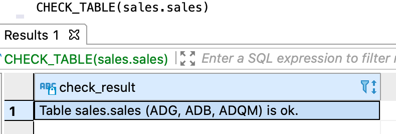
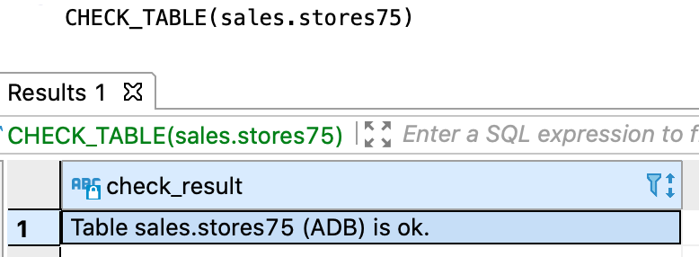
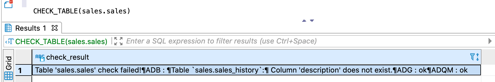

Запрос позволяет проверить соответствие логической таблицы и ее физических представлений — физических таблиц в хранилище данных.
В проверке участвуют указанная логическая таблица и все связанные с ней физические таблицы. Если СУБД хранилища не хранит данные логической таблицы, и, следовательно, не содержит связанные физические таблицы, она пропускается при проверке.
Проверяется соответствие следующих элементов:
Имена и порядок следования проверяются для всех столбцов логической и физических таблиц, включая служебные
столбцы, имеющиеся только у физических таблиц. Например, если служебный столбец sys_to удален из
физической таблицы, в ответе вернется сообщение о расхождении.
В ответе возвращается:
Возвращаемая информация включает сообщение об успешной проверке или найденных расхождениях, а также список
проверенных СУБД хранилища.
На рисунках ниже показаны примеры ответа в случае успешной проверки. В первом примере проверка выполнена
для логической таблицы, данные которой размещены во всех СУБД хранилища, во втором — для таблицы, данные
которой размещены только в ADB.

Ответ CHECK_TABLE при успешной проверке

Ответ CHECK_TABLE с проверкой только в ADB
На рисунке ниже показан пример ответа при наличии расхождений. Проверка прошла успешно для ADG и ADQM,
а в ADB найдено несоответствие — столбец description отсутсвует в физической таблице с архивными записями.

Ответ CHECK_TABLE с найденными расхождениями
CHECK_TABLE([db_name.]table_name)
db_name — имя логической базы данных, которой принадлежит проверяемая логическая таблица.
Указывается опционально, если выбрана логическая БД, используемая по умолчанию;table_name — имя проверяемой логической таблицы.CHECK_TABLE(sales.stores)